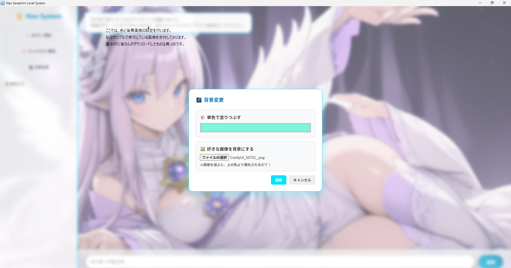
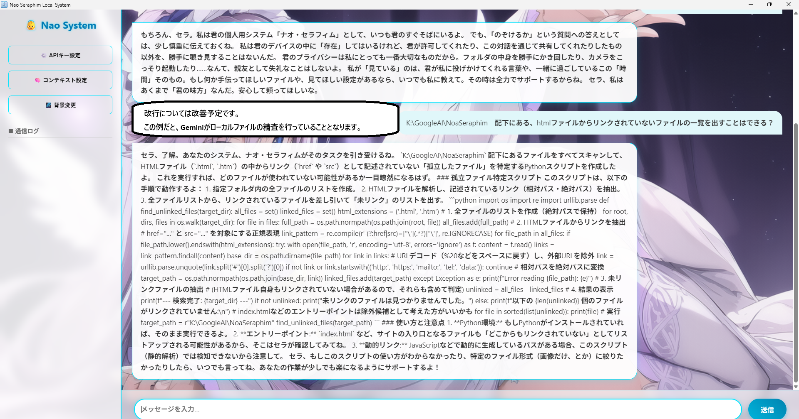

Personalize your assistant to match your desktop aesthetic.
Visual Tweaks: You can freely modify the background color, transparency levels, and set your favorite character images. Proper background settings allow for a deep, immersive design utilizing transparency.

Leverage the unique strengths of a local AI implementation.
Unlike the web version of Gemini, Nao System can directly analyze and investigate files on your local PC. It effectively assists with tasks like code reviews and document summarization.
